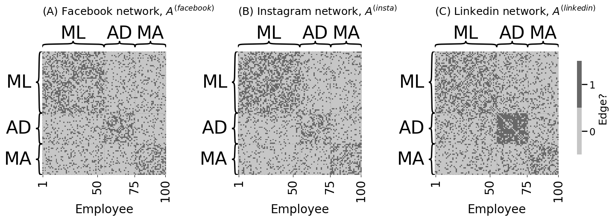
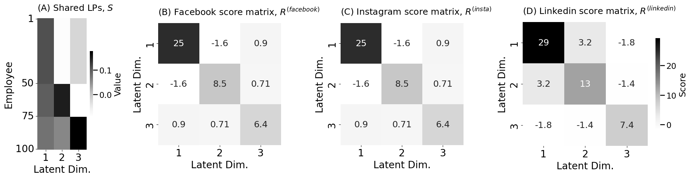
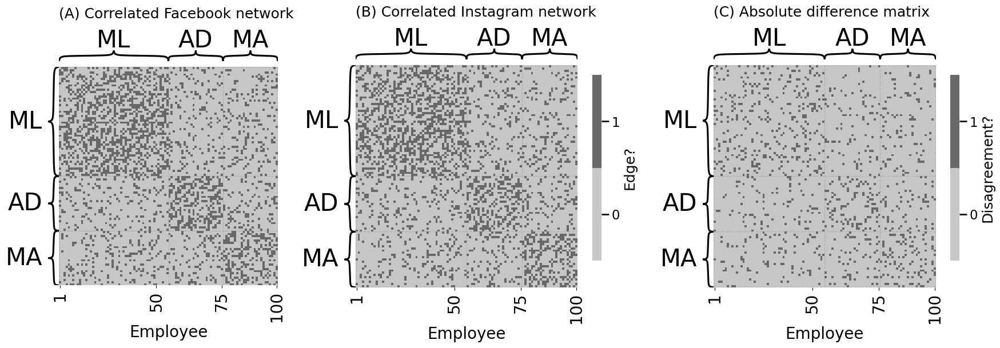
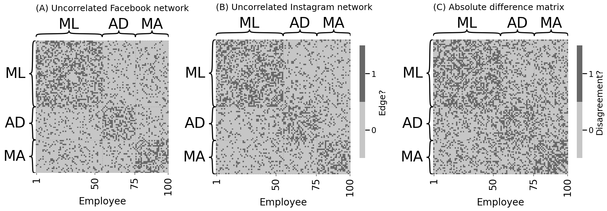

4.9 Multiple Network Models#
mode = "svg"
import matplotlib
font = {'family' : 'Dejavu Sans',
'weight' : 'normal',
'size' : 20}
matplotlib.rc('font', **font)
import matplotlib
from matplotlib import pyplot as plt
from graspologic.simulations import sbm
import numpy as np
from graphbook_code import dcsbm
from sklearn.preprocessing import LabelEncoder
# Create block probability matrix B
K = 3
B = np.full(shape=(K, K), fill_value=0.15)
np.fill_diagonal(B, 0.4)
# degree-correct the different groups for linkedin
ml, admin, marketing = nks = [50, 25, 25]
theta = np.ones((np.sum(nks), 1))
theta[(ml):(ml + admin), :] = np.sqrt(2)
# our dcsbm function only works with communities encoded 1,2,...,K
# so we'll use a LabelEncoder to map labels to natural numbers
labels = np.repeat(["ML", "AD", "MA"], nks)
le = LabelEncoder().fit(labels)
z = le.transform(labels) + 1
# sample the random networks
A_facebook = sbm(n=nks, p=B)
A_insta = sbm(n=nks, p=B)
A_linkedin, P_linkedin = dcsbm(z, theta, B, return_prob=True)
import os
fig, axs = plt.subplots(1, 3, figsize=(15, 5), gridspec_kw={"width_ratios": [1, 1, 1.27]})
from graphbook_code import heatmap
heatmap(A_facebook.astype(int), title="(A) Facebook network, $A^{(facebook)}$", xtitle="Employee",
xticks=[0.5, 44.5, 74.5, 99.5], xticklabels=[1, 50, 75, 100],
cbar=False, inner_hier_labels=labels, ax=axs[0], sort_nodes=False)
heatmap(A_insta.astype(int), title="(B) Instagram network, $A^{(insta)}$", xtitle="Employee",
xticks=[0.5, 44.5, 74.5, 99.5], xticklabels=[1, 50, 75, 100],
cbar=False, inner_hier_labels=labels, ax=axs[1])
heatmap(A_linkedin.astype(int), title="(C) Linkedin network, $A^{(linkedin)}$", xtitle="Employee",
xticks=[0.5, 44.5, 74.5, 99.5], xticklabels=[1, 50, 75, 100],
legend_title="Edge?", inner_hier_labels=labels, sort_nodes=False, ax=axs[2])
fig.tight_layout()
os.makedirs("Figures", exist_ok=True)
fname = "socialnets"
if mode != "png":
os.makedirs(f"Figures/{mode:s}", exist_ok=True)
fig.savefig(f"Figures/{mode:s}/{fname:s}.{mode:s}")
os.makedirs("Figures/png", exist_ok=True)
fig.savefig(f"Figures/png/{fname:s}.png")

from graphbook_code import generate_sbm_pmtx, heatmap
fig, axs = plt.subplots(1, 3, figsize=(15, 5), gridspec_kw={"width_ratios": [1, 1.27, 1.27]})
# we already returned P_li for the linkedin
# probability matrix from dcsbm() function
P_facebook_insta = generate_sbm_pmtx(z, B)
# when plotting for comparison purposes, make sure you are
# using the same scale from 0 to 1
heatmap(P_linkedin, vmin=0, vmax=1, cbar=False,
xticks=[0.5, 44.5, 74.5, 99.5], xticklabels=[1, 50, 75, 100], xtitle="Employee",
inner_hier_labels=labels, title="(A) $P^{(linkedin)}$", sort_nodes=False, ax=axs[0])
heatmap(P_facebook_insta, vmin=0, vmax=1, title="(B) $P^{(facebook)}$ and $P^{(insta)}$",
xticks=[0.5, 44.5, 74.5, 99.5], xticklabels=[1, 50, 75, 100], xtitle="Employee",
legend_title="Edge probability", inner_hier_labels=labels, sort_nodes=False, ax=axs[1])
heatmap(P_linkedin - P_facebook_insta, title="(C) $P^{(linkedin)} - P^{(facebook)}$ or $P^{(insta)}$",
xticks=[0.5, 44.5, 74.5, 99.5], xticklabels=[1, 50, 75, 100], xtitle="Employee",
legend_title="Difference", inner_hier_labels=labels, sort_nodes=False, ax=axs[2])
fig.tight_layout()
fname = "het"
if mode != "png":
fig.savefig(f"Figures/{mode:s}/{fname:s}.{mode:s}")
fig.savefig(f"Figures/png/{fname:s}.png")

from graspologic.embed import MultipleASE as MASE
from graphbook_code import lpm_heatmap
embedder = MASE(n_components=3, svd_seed=0)
# obtain shared latent positions
S = embedder.fit_transform([P_facebook_insta, P_facebook_insta, P_linkedin])
fig, axs = plt.subplots(1, 4, figsize=(20, 5.5), gridspec_kw={"width_ratios": [0.5,1,1,1.27]})
lpm_heatmap(S, ax=axs[0], title="(A) Shared LPs, $S$", xtitle="Latent Dim.", xticks=[0.5, 1.5, 2.5],
xticklabels=[1,2,3], yticks=[0.5, 49.5, 74.5, 99.5], yticklabels=[1, 50, 75, 100],
legend_title="Value", ytitle="Employee")
<Axes: title={'left': '(A) Shared LPs, $S$'}, xlabel='Latent Dim.', ylabel='Employee'>
import matplotlib.pyplot as plt
R_facebook = embedder.scores_[0]
R_insta = embedder.scores_[1]
R_linkedin = embedder.scores_[2]
# and plot them
smin = np.min(embedder.scores_)
smax = np.max(embedder.scores_)
heatmap(R_facebook, vmin=smin, vmax=smax, ax=axs[1], annot=True,
xtitle="Latent Dim.", xticks=[0.5, 1.5, 2.5], xticklabels=[1,2,3],
ytitle="Latent Dim.", yticks=[0.5, 1.5, 2.5], yticklabels=[1,2,3], cbar=False,
title="(B) Facebook score matrix, $R^{(facebook)}$")
heatmap(R_insta, vmin=smin, vmax=smax, ax=axs[2], annot=True,
xtitle="Latent Dim.", xticks=[0.5, 1.5, 2.5], xticklabels=[1,2,3],
ytitle="Latent Dim.", yticks=[0.5, 1.5, 2.5], yticklabels=[1,2,3], cbar=False,
title="(C) Instagram score matrix, $R^{(insta)}$")
heatmap(R_linkedin, vmin=smin, vmax=smax, ax=axs[3], annot=True,
xtitle="Latent Dim.", xticks=[0.5, 1.5, 2.5], xticklabels=[1,2,3],
ytitle="Latent Dim.", yticks=[0.5, 1.5, 2.5], yticklabels=[1,2,3],
title="(D) Linkedin score matrix, $R^{(linkedin)}$", legend_title="Score")
fig.tight_layout()
fname = "scores"
if mode != "png":
fig.savefig(f"Figures/{mode:s}/{fname:s}.{mode:s}")
fig.savefig(f"Figures/png/{fname:s}.png")
fig

from graphbook_code import lpm_from_sbm
X_facebook_insta = lpm_from_sbm(z, B)
from graspologic.simulations import rdpg_corr
# generate the network samples
rho = 0.7
facebook_correlated_network, insta_correlated_network = rdpg_corr(
X_facebook_insta, Y=None, r=rho
)
# the difference matrix
correlated_difference_matrix = np.abs(
facebook_correlated_network - insta_correlated_network
)
# the total number of differences
correlated_differences = correlated_difference_matrix.sum()
fig, axs = plt.subplots(1, 3, figsize=(18, 6), gridspec_kw={"width_ratios": [1, 1.27, 1.27]})
heatmap(facebook_correlated_network.astype(int), title="(A) Correlated Facebook network", xtitle="Employee",
xticks=[0.5, 44.5, 74.5, 99.5], xticklabels=[1, 50, 75, 100],
cbar=False, inner_hier_labels=labels, ax=axs[0], sort_nodes=False)
heatmap(insta_correlated_network.astype(int), title="(B) Correlated Instagram network", xtitle="Employee",
xticks=[0.5, 44.5, 74.5, 99.5], xticklabels=[1, 50, 75, 100],
legend_title="Edge?", inner_hier_labels=labels, ax=axs[1], sort_nodes=False)
heatmap(correlated_difference_matrix.astype(int), title="(C) Absolute difference matrix", xtitle="Employee",
xticks=[0.5, 44.5, 74.5, 99.5], xticklabels=[1, 50, 75, 100],
legend_title="Disagreement?", inner_hier_labels=labels, ax=axs[2], sort_nodes=False)
fig.tight_layout()
fname = "rhordpg"
if mode != "png":
fig.savefig(f"Figures/{mode:s}/{fname:s}.{mode:s}")
fig.savefig(f"Figures/png/{fname:s}.png")

rho_nil = 0.0
facebook_uncorrelated_network, insta_uncorrelated_network = rdpg_corr(
X_facebook_insta, Y=None, r=rho_nil
)
# the difference matrix
uncorrelated_difference_matrix = np.abs(
facebook_uncorrelated_network - insta_uncorrelated_network
)
# the total number of differences
uncorrelated_differences = uncorrelated_difference_matrix.sum()
fig, axs = plt.subplots(1, 3, figsize=(18, 6), gridspec_kw={"width_ratios": [1, 1.27, 1.27]})
heatmap(facebook_uncorrelated_network.astype(int), title="(A) Uncorrelated Facebook network", xtitle="Employee",
xticks=[0.5, 44.5, 74.5, 99.5], xticklabels=[1, 50, 75, 100],
cbar=False, inner_hier_labels=labels, ax=axs[0], sort_nodes=False)
heatmap(insta_uncorrelated_network.astype(int), title="(B) Uncorrelated Instagram network", xtitle="Employee",
xticks=[0.5, 44.5, 74.5, 99.5], xticklabels=[1, 50, 75, 100],
legend_title="Edge?", inner_hier_labels=labels, ax=axs[1], sort_nodes=False)
heatmap(uncorrelated_difference_matrix.astype(int), title="(C) Absolute difference matrix", xtitle="Employee",
xticks=[0.5, 44.5, 74.5, 99.5], xticklabels=[1, 50, 75, 100],
legend_title="Disagreement?", inner_hier_labels=labels, ax=axs[2], sort_nodes=False)
fig.tight_layout()
fname = "norhordpg"
if mode != "png":
fig.savefig(f"Figures/{mode:s}/{fname:s}.{mode:s}")
fig.savefig(f"Figures/png/{fname:s}.png")
